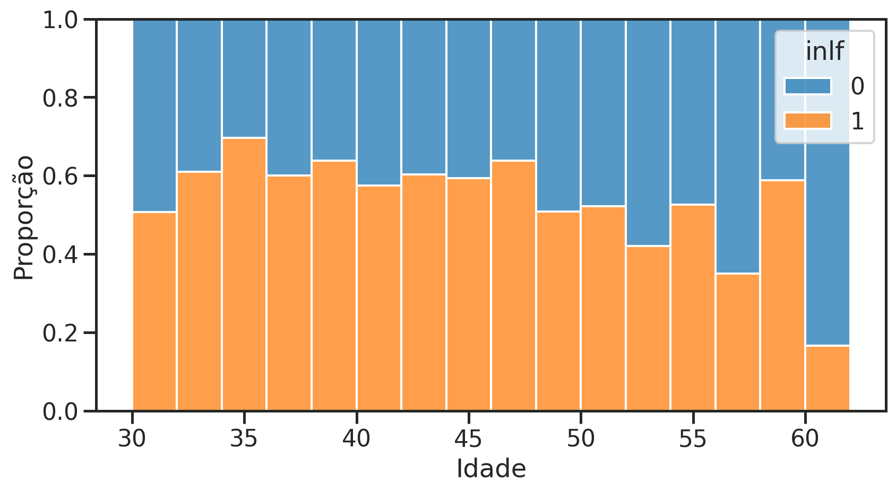
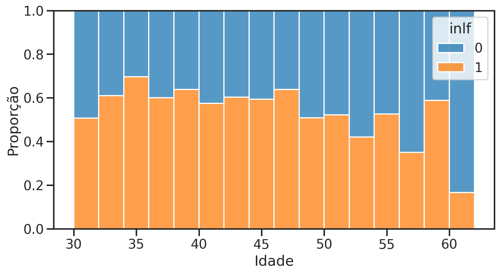
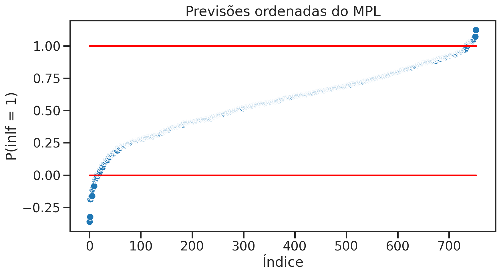
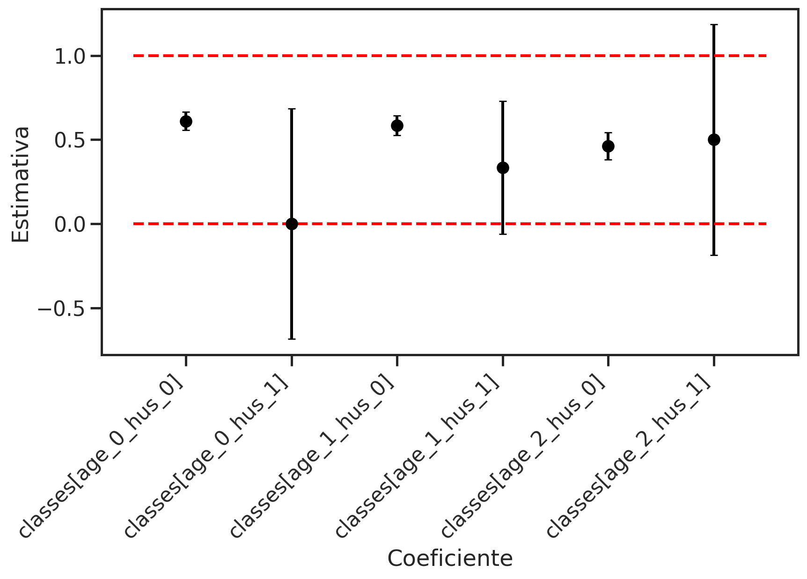
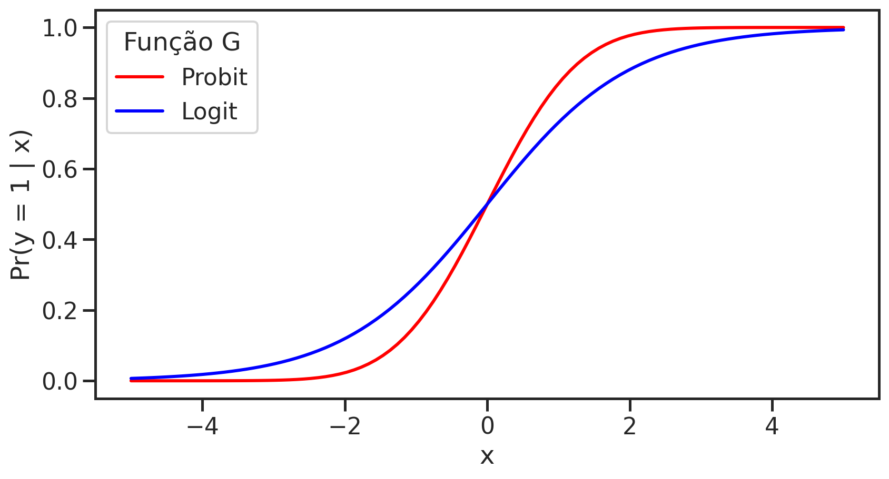
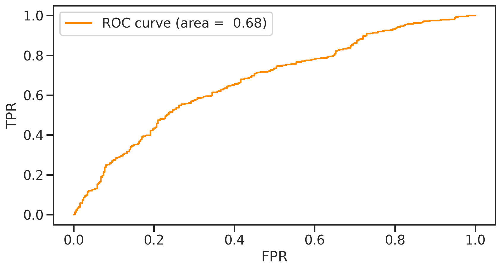

Code
Text(0, 0.5, 'Proporção')
Modelos de Escolha Qualitativa
Até agora, nossos modelos ficaram assim: \[ \begin{align} y &= b_0 + b_1 x + e \\ e &\sim D\left(0,\sigma^2\right) \end{align} \]
A suposição de distribuição em \(e\):
Em princípio implica que \(y \in \mathbb{R}\).
Resultados de testes, renda, taxas de criminalidade, etc. são todos resultados contínuos. ✅
Mas alguns resultados são claramente binários (ou seja, VERDADEIRO ou FALSO):
Ou você trabalha ou não,
Ou você tem filhos ou não,
Ou você comprou um produto ou não,
Você jogou uma moeda e saiu cara ou coroa.
Resultados restritos a FALSO vs VERDADEIRO, ou 0 vs 1.
Teríamos \(y \in \{0,1\}\).
Nessas situações, estamos principalmente interessados em estimar a probabilidade de resposta ou a probabilidade de sucesso:
\[p(x) = \Pr(y=1 | x)\]
como \(p(x)\) muda quando mudamos \(x\)?
Se aumentarmos \(x\) em uma unidade, como a probabilidade de \(y=1\) mudaria?
Lembre-se da Distribuição de Bernoulli?: Chamamos uma variável aleatória \(y \in \{0,1\}\) tal que
\[ \begin{align} \Pr(y = 1) &= p \\ \Pr(y = 0) &= 1-p \\ p &\in[0,1] \end{align} \]
uma variável aleatória de Bernoulli.
Condicione essas probabilidades em uma covariada \(x\)
\[ \begin{align} \Pr(y = 1 | X = x) &= p(x) \\ \Pr(y = 0 | X = x) &= 1-p(x) \\ p(x) &\in[0,1] \end{align} \]
Particularmente: valor esperado (ou seja, a média) de \(Y\) dado \(x\) \[ E[y | x] = 1 \times p(x) + 0 \times (1-p(x)) = p(x) \]
Muitas vezes modelamos expectativas condicionais 😉
A opção mais simples. Modele a probabilidade de resposta como \[ \Pr(y = 1 | x) = p(x) = \beta_0 + \beta_1 x_1 + \dots + \beta_K x_K \]
Interpretação: uma mudança de 1 unidade em \(x_1\), resulta em uma mudança de \(\beta_1\) em \(p(x)\).
Participação feminina no mercado de trabalho
Como o status de inlf (na força de trabalho) depende da renda familiar da mulher solteira, sua educação, idade e número de filhos pequenos?
Text(0, 0.5, 'Proporção')
| LPM | |
|---|---|
| Intercept | 0.3220 |
| (0.4864) | |
| nwifeinc | -0.0034 |
| (0.0015) | |
| kidslt6 | -0.2604 |
| (0.0341) | |
| R-squared Adj. | 0.2568 |
idêntico aos nossos modelos de regressão linear anteriores
Variável dependente inlf assume somente dois valores, 0 ou 1.
Resultados: se a renda da mulher solteira aumenta em 10 (ou seja, 10.000 USD), \(p(x)\) cai em 0,034 (isso é um efeito pequeno!),
uma criança pequena adicional reduziria a probabilidade de trabalho em 0,26 (isso é grande).
Até agora, tudo simples.️
Text(0.5, 1.0, 'Previsões ordenadas do MPL')
* As previsões do MPL de \(p(x)\) não estão garantidas no intervalo unitário \([0,1]\).
Lembre-se: \(e \sim D\left(0,\sigma^2\right)\)
aqui, algumas probabilidades menores que zero!
Particularmente irritante se você quiser previsões: O que é probabilidade -0,3? 🤔
mroz["age_fct"] = pd.cut(mroz["age"], bins=3, labels=False)
mroz["huswage_fct"] = pd.cut(mroz["huswage"], bins=2, labels=False)
mroz["classes"] = (
"age_" + mroz["age_fct"].astype(str) + "_hus_" + mroz["huswage_fct"].astype(str)
)
lpm_saturated = smf.ols("inlf ~ -1 + classes", data=mroz).fit()
lpm_saturated.summary(slim=True).tables[1]| coef | std err | t | P>|t| | [0.025 | 0.975] | |
| classes[age_0_hus_0] | 0.6108 | 0.028 | 22.029 | 0.000 | 0.556 | 0.665 |
| classes[age_0_hus_1] | 0 | 0.349 | 0 | 1.000 | -0.684 | 0.684 |
| classes[age_1_hus_0] | 0.5851 | 0.029 | 19.936 | 0.000 | 0.527 | 0.643 |
| classes[age_1_hus_1] | 0.3333 | 0.201 | 1.657 | 0.098 | -0.062 | 0.728 |
| classes[age_2_hus_0] | 0.4621 | 0.041 | 11.289 | 0.000 | 0.382 | 0.542 |
| classes[age_2_hus_1] | 0.5000 | 0.349 | 1.435 | 0.152 | -0.184 | 1.184 |
modelo saturado : só tem variáveis explicativas binárias (dummies)
Cada classe: \(p(x)\) dentro daquela célula.
Text(0.5, 0, 'Coeficiente')
Cada estimativa pontual: \(p(x)\) dentro do intervalo \([0,1]\).
Mulheres da faixa etária mais jovem e de menor renda do marido (coeficiente age_0_hus_0) têm a maior probabilidade de trabalhar (0.611).
Nesta classe de modelos mudamos a forma como modelamos a probabilidade de resposta \(p(x)\). Em vez da estrutura linear simples de cima, escrevemos \[ \Pr(y = 1 | x) = p(x) = G \left(\beta_0 + \beta_1 x_1 + \dots + \beta_K x_K \right) \]
quase idêntico ao MPL!
exceto que o índice linear \(\beta_0 + \beta_1 x_1 + \dots + \beta_K x_K\) agora está dentro da função de ligação \(G(\cdot)\) (i.e. link function).
Propriedade principal de \(G\): transforma qualquer \(z\in \mathbb{R}\) em um número no intervalo \((0,1)\).
Isso resolve nosso problema de previsões fora do intervalo \(\left[0, 1\right]\) para probabilidades.

Para probit e logit:
qualquer valor \(x\) resulta em um valor \(p(x)\) entre 0 e 1.
estritamente crescentes.
Logit tem caudas mais longas.
Probit:
\(G(z)=\Phi(z) = \int_{-\infty}^z \frac{1}{\sqrt{2\pi}}e^{-\frac{1}{2}t^2}dt\) Distribuição Normal
Logit:
\(G(z)=\Lambda(z)=\frac{1}{1+\exp(-z)}\) Distribuição Logística
PythonPodemos usar a função glm para rodar um modelo linear generalizado
Isso generaliza nosso modelo linear padrão. Temos que especificar uma família e um link.
Porém o statsmodels possui funções especializadas para probit e logit.
| Probit | Logit | |
| Intercept | 0.7065*** | 1.1364*** |
| (0.2470) | (0.3983) | |
| age | -0.0125** | -0.0202** |
| (0.0057) | (0.0092) |
coeficiente de probit para idade é -0.013
-0.02 para logit,
impacto da idade na probabilidade de trabalhar é negativo
No entanto, quão negativo? Não podemos dizer!
\[
\Pr(y = 1 | \text{age})= G \left(x \beta\right) = G \left(\beta_0 + \beta_1 \text{age} \right)
\] e o efeito marginal de idade na probabilidade de resposta positiva é
\[\frac{\partial{\Pr(y = 1 | \text{age})}}{ \partial{\text{age}}} = g \left(\beta_0 + \beta_1 \text{age} \right) \beta_1\]
\(g\) é definida como \(g(z) = \frac{dG}{dz}(z)\) - a primeira derivada de \(G\) (sendo \(G\) uma distribuição, \(g\) é a função densidade).
dado que \(G\) é não-linear, isso significa que \(g\) não será constante. Você pode experimentar isso usando este aplicativo aqui:
Não há um único efeito marginal nesses modelos, pois isso depende de onde avaliamos a expressão anterior. Na prática, existem duas abordagens comuns:
reporte o efeito parcial na média (PEA): \[PEA(X_j)=g(\bar{x} \beta) \beta_j\]
relate o efeito parcial médio (APE): \[APE(X_j)=\frac{1}{n} \sum_{i=1}^N g(x_i \beta) \beta_j\]
Felizmente, a classe dos resultados de um GLM tem um método get_margeff que calcula esses efeitos para nós.
def get_mfx(model):
return pd.concat(
[
model.get_margeff(at=p).summary_frame().loc[:, ["dy/dx", "Std. Err."]]
for p in ["mean", "overall"]
],
axis=1,
)
f = "inlf ~ age + kidslt6 + nwifeinc" # Regressao estimada
probit_reg = smf.probit(f, data=mroz).fit()
logit_reg = smf.logit(f, data=mroz).fit()
probit_mfx = get_mfx(probit_reg)
logit_mfx = get_mfx(logit_reg)Optimization terminated successfully.
Current function value: 0.635318
Iterations 5
Optimization terminated successfully.
Current function value: 0.635295
Iterations 5Probit
| PEA | APE | |||
|---|---|---|---|---|
| dy/dx | Std. Err. | dy/dx | Std. Err. | |
| age | -0.013671 | 0.002610 | -0.012646 | 0.002284 |
| kidslt6 | -0.313910 | 0.043171 | -0.290372 | 0.035530 |
| nwifeinc | -0.004496 | 0.001629 | -0.004159 | 0.001484 |
Logit
| PEA | APE | |||
|---|---|---|---|---|
| dy/dx | Std. Err. | dy/dx | Std. Err. | |
| age | -0.013926 | 0.002686 | -0.012652 | 0.002282 |
| kidslt6 | -0.321692 | 0.046099 | -0.292258 | 0.036455 |
| nwifeinc | -0.004593 | 0.001688 | -0.004173 | 0.001505 |
Não existe \(R^2\) universalmente aceito para modelos binários.
Podemos pensar em um pseudo \(R^2\) que compara nosso modelo com outro sem regressores:
Vamos verificar precisão - qual é a proporção prevista corretamente!
Podemos atribuir a previsão 1 caso \(p(x) > 0.5\) e 0 caso contrário.
Taxa de Verdadeiros Positivos (TPR, sensitividade, recall): \(TP/P=\) 0.785
Taxa de Falsos Positivos (FPR): \(FP/N=\) 0.606
Acurácia: \((TP + TN)/ (P+N)=\) 0.616
O corte de 0,5 é arbitrário. E se todas as probabilidades previstas forem \(> 0,5\), mas nos dados houver cerca de 50% de zeros?
Vamos escolher um corte arbitrário \(c \in (0,1)\) e verificar a precisão de cada valor. Isso dá uma visão melhor.
Podemos confrontar a taxa de verdadeiros positivos (TPR) com a taxa de falsos positivos (FPR), para cada valor de corte \(c\in[0, 1]\).
TPR: número de mulheres corretamente previstas para trabalhar dividido pelo número de mulheres que trabalham.
FPR: número de mulheres incorretamente previstas para trabalhar dividido pelo número de mulheres não trabalhadoras.
Plotar FPR vs TPR para cada \(c\) define a curva ROC.
Um bom modelo tem uma curva ROC no canto superior esquerdo: FPR = 0, TPR = 1.
from sklearn.metrics import roc_curve, auc, accuracy_score
pred_prob = probit_reg.predict()
fpr, tpr, thresholds = roc_curve(mroz["inlf"], pred_prob)
roc_auc = auc(fpr, tpr)
accuracies = [accuracy_score(mroz["inlf"], pred_prob > t) for t in thresholds]
acc_t = thresholds[np.argmax(accuracies)] # threshold que maximiza a acurácia
plt.plot(fpr, tpr, color="darkorange", lw=2, label=f"ROC curve (area = {roc_auc: .2f})")
plt.legend()
plt.ylabel("TPR")
plt.xlabel("FPR")Text(0.5, 0, 'FPR')
Melhor precisão em torno de \(c=0.54\)
ROC sempre acima da linha de 45 graus. Melhor do que atribuição aleatória (jogar uma moeda)!
Ao invés de usar média e variância condicionais, usaremos a distribuição condicional completa
Amostra iid \(\lbrace y_i, x_i \rbrace_{i=1}^N\). Queremos estimar a distribuição \(f(y|x)\)
Hipótese: esta distribuição é conhecida, a não ser por um número finito de parâmetros fixos.
\(y_i^*=x_i\theta + \varepsilon_i\), sendo \(\varepsilon_i\sim N(0,1)\)
Não observamos \(y_i^*\), apenas \(y_i\)
\[ \begin{equation*} y_i = \begin{cases} 1 \text{ se } y_i^* > 0\\ 0 \text{ se } y_i^* \leq 0 \end{cases} \end{equation*} \]
A função de probabilidade condicional pode ser escrita como: \[p(y_i|x_i)=\Phi(x_i\theta)^{y_i}\cdot [1-\Phi(x_i\theta)]^{1-y_i}\]
Esta é a probabilidade de ocorrência de um ponto \((x_i, y_i)\). Para o conjunto de dados observados temos a função de verossimilhança \[\ell(\theta)=\Pi_{i=1}^N \Phi(x_i\theta)^{y_i}\cdot [1-\Phi(x_i\theta)]^{1-y_i}\]
Máxima Verossimilhança consiste em maximizar a função de verossimilhança em relação aos parâmetros, \(\theta\).
Podemos maximizar a log-verossimilhança por praticidade. \(\mathcal{L}(\theta)=\log(\ell(\theta))=\sum_{i=1}^N y_i\log(\Phi(x_i\theta))+(1-y_i)\log(1-\Phi(x_i\theta))\)
\[\hat\theta = \arg \max_{\theta} \mathcal{L}(\theta)\]
O vetor de score é dado pela derivada da log-verossimilhança em relação a cada um dos parâmetros \[s(\theta)=\nabla_\theta \mathcal{L}(\theta)=\left[\frac{\partial\mathcal{L}(\theta)}{\partial\theta_1}, \ldots, \frac{\partial\mathcal{L}(\theta)}{\partial\theta_k}\right]^{\prime}\]
A Hessiana é a matriz de segundas derivadas \[H(\theta)=\nabla^2_\theta \mathcal{L}(\theta)\]
Exercício: Calcule o score do modelo probit.
\(\mathcal{L}(\theta)=\sum_{i=1}^N y_i\log(\Phi(x_i\theta))+(1-y_i)\log(1-\Phi(x_i\theta))\)
\[\begin{align} s(\theta)&=\frac{d\mathcal{L}(\theta)}{d\theta}=\sum_{i=1}^N y_i x_i\frac{\phi(x_i \theta)}{\Phi(x_i \theta)} - (1-y_i)x_i\frac{\phi(x_i \theta)}{1-\Phi(x_i \theta)}\\ &=\sum_{i=1}^N \frac{[1-\Phi(x_i \theta)]y_i x_i\phi(x_i \theta) - \Phi(x_i \theta)(1-y_i)x_i\phi(x_i \theta)}{\Phi(x_i \theta) [1-\Phi(x_i \theta)]}\\ &=\sum_{i=1}^N \frac{x_i\phi(x_i \theta)}{\Phi(x_i \theta) [1-\Phi(x_i \theta)]}[y_i-\Phi(x_i \theta)] \end{align}\]
Suponha que tenhamos um conjunto simples de dados \(\{x_i\}_{i=1}^N\) \(iid\) e queremos ajustar uma distribuição exponencial
\(x_i\sim Exp(\lambda)\). \(f(x; \lambda)=\frac{1}{\lambda}e^{-x_i/\lambda}\). \(x_i\geq 0\).
Qual é a função de log-verossimilhança?
Encontre o estimador de máxima verossimilhança \(\hat\lambda_{mle}\)
Função de verossimilhança: \(L(\lambda)=\Pi_{i=1}^N f(x_i; \lambda)=\Pi_{i=1}^N \frac{1}{\lambda}e^{-x_i/\lambda}\)
Log-verossimilhança: \(\mathcal{L}(\lambda)=\sum_{i=1}^N \log \frac{1}{\lambda}e^{-x_i/\lambda}\)
Ao final encontramos …
\[\hat\lambda_{mle}=\frac{1}{N}\sum_{i=1}^N x_i\]

Podemos utilizar momentos populacionais para identificar parâmetros
De fato, tanto MQO quanto VI podem ser entendidos como estimadores MM!
Quais são os momentos utilizados no MQO?
\(E[u]=0\) e \(E[xu]=0\), que são as equações normais do MQO
O MM resolve o análogo amostral destas equações
\[\hat{m}(\hat\theta)=\frac{1}{N}\sum_{i=1}^N g(Z_i, \hat\theta)=0\]

Considere o MQO. Podemos escrever duas equação de momento que identificam os parâmetros do modelo \[ \hat{m}(\hat\beta)=\begin{cases} \frac{1}{N}\sum_{i=1}^N(y_i-\hat\beta_0-\hat\beta_1 x_i)=0\\ \frac{1}{N}\sum_{i=1}^Nx_i(y_i-\hat\beta_0-\hat\beta_1 x_i)=0 \end{cases} \]
O MM escreve momentos populacionais em termos dos parâmetros e resolve o sistema de equações, simples!
Podemos generalizar o método dos momentos. Daí o nome generalized method of moments - GMM
Minimizar a norma \({\displaystyle \|{\hat {m}}(\theta )\|_{W}^{2}={\hat {m}}(\theta )^{\mathsf {T}}\,W{\hat {m}}(\theta)}\)
Onde \(W\) é uma matriz positiva definida
\({\displaystyle {\hat {\theta }}=\operatorname {arg} \min _{\theta \in \Theta }{\bigg (}{\frac {1}{N}}\sum _{i=1}^{N}g(Z_{i},\theta ){\bigg )}^{\mathsf {T}}{W}{\bigg (}{\frac {1}{N}}\sum_{i=1}^{N}g(Z_{i},\theta ){\bigg )}}\)
Especialmente útil quando temos mais equações de momento do que parâmetros
MQO, VI e MLE podem ser obtidos a partir de um GMM
Aplicações diversas em
Veja mais em Wooldridge (2001) JEP
WOOLDRIDGE, Jeffrey M. Introdução à econometria: uma abordagem moderna. São Paulo: Cengage Learning, 2016. Tradução da 4ª edição norte-americana por José Antonio Ferreira. Capítulo 17 Modelo com Variáveis Dependentes Limitadas e Correções da Seleção Amostral.
GUJARATI, Damodar N.; PORTER, Dawn C. Econometria básica. Porto Alegre: Amgh Editora, 2011. - 5. ed. Capítulo 15 Modelos de regressão de resposta qualitativa
WOOLDRIDGE, Jeffrey M. Econometric Analysis of Cross Section and Panel Data. MIT press, 2010. Second Edition. Chapter 15 Binary Response Models
[1]: Este slides foram baseados nas aulas de econometria da SciencesPo Department of Economics